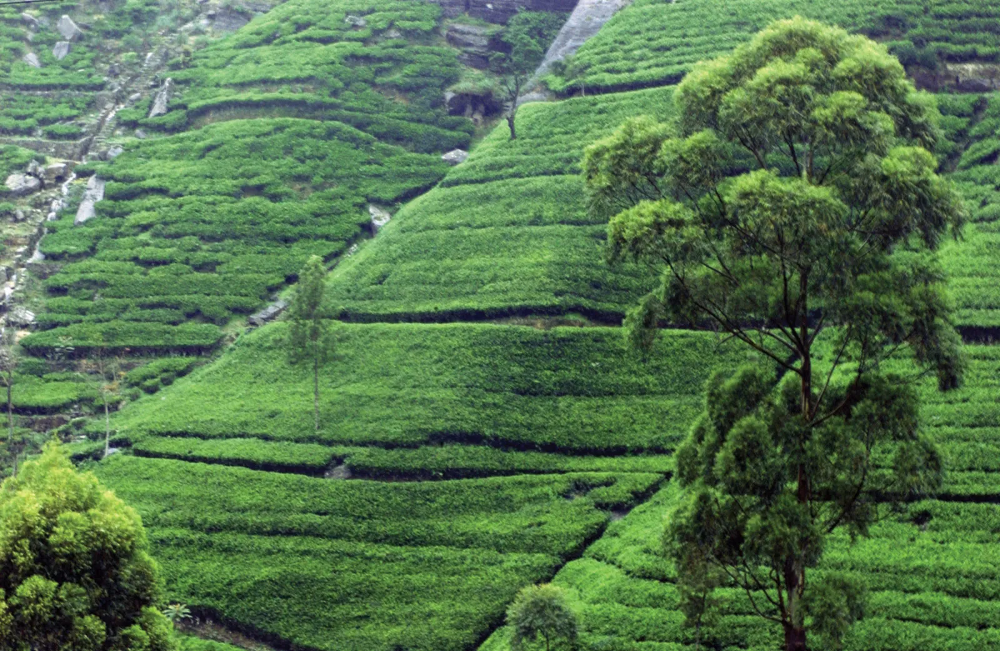
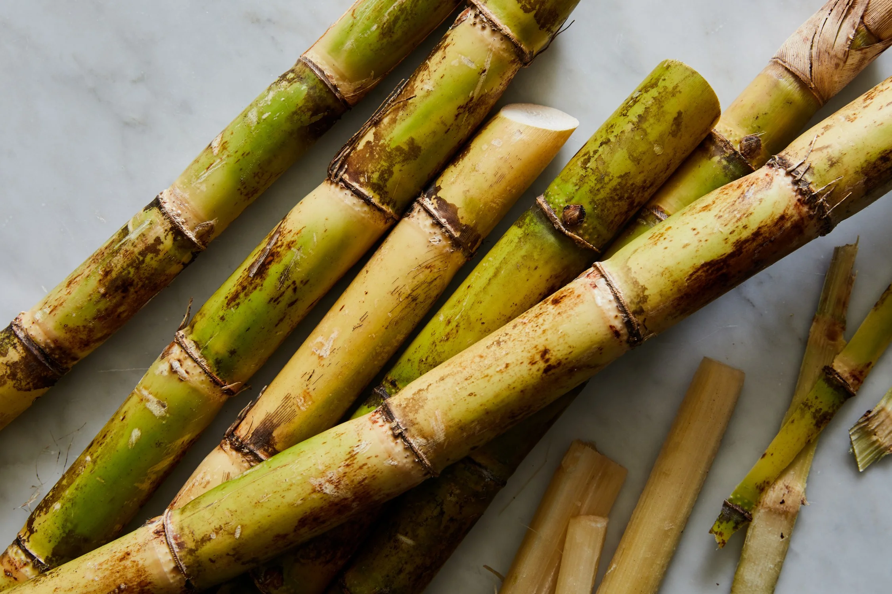
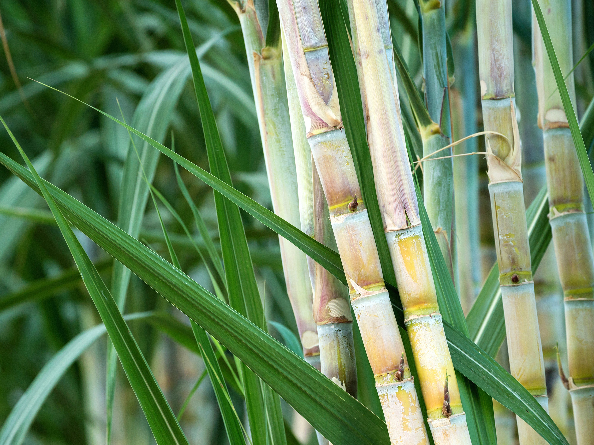
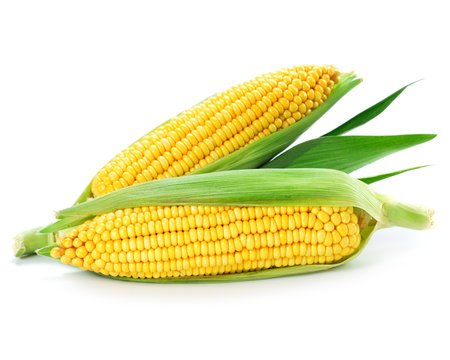
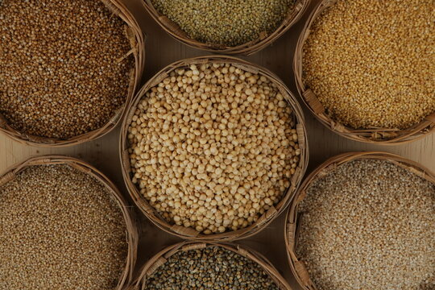
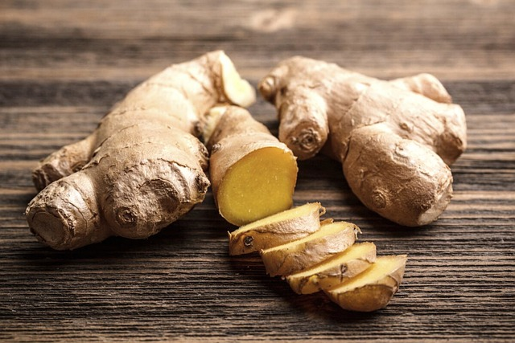
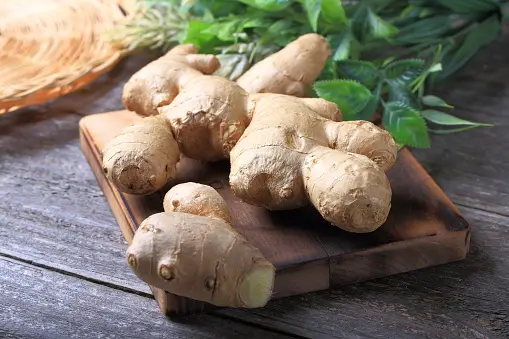

Choose a suitable field with well-drained soil. Rice requires a lot of water, so the field
should be
able to
retain water without becoming waterlogged.
Plow the field to break up the soil and create a fine seedbed.
Level the field to ensure uniform water distribution during cultivation.
Seedbed Preparation:
Prepare a seedbed either on the same field or a separate location. This is where the rice seeds
will be
sown and
germinated before transplanting.
Sow the rice seeds in rows, ensuring proper spacing.
Seed Germination:
Keep the seedbed adequately watered to facilitate germination.
Monitor the seedlings for pests and diseases, and take appropriate measures if necessary.
Nursery Maintenance:
Once the rice seedlings have reached a suitable height (usually a few inches), they are ready
for
transplanting.
Maintain the nursery by providing sufficient water and protecting the seedlings from pests.
Transplanting:
Transplant the seedlings from the nursery to the main field. This is typically done when the
seedlings
have 3-4
leaves.
Ensure proper spacing between the transplanted seedlings to allow for healthy growth.
Water Management:
Rice requires a lot of water for optimal growth. Maintain a consistent water level in the field,
especially
during the growing season.
In some cases, farmers use traditional flood irrigation methods, while others may use more modern
techniques
such as drip or sprinkler irrigation.
Fertilization:
Apply fertilizers based on soil testing and the specific nutrient requirements of rice. Common
fertilizers
include nitrogen, phosphorus, and potassium.
Harvesting:
Harvesting is typically done when the rice grains have matured and turned golden brown.
Use sickles or combine harvesters for large-scale operations.
Drying and Threshing:
Dry the harvested rice in the sun or using mechanical dryers.
Once dried, thresh the rice to separate the grains from the straw.
Milling and Storage:
Mill the rice to remove the outer husk, bran, and germ.
Store the processed rice in a cool, dry place.
हिंदी
भूमि की तैयारी:
अच्छी जल निकास वाली मिट्टी वाला उपयुक्त खेत चुनें। चावल के लिए बहुत अधिक पानी की आवश्यकता
होती है,
इसलिए खेत
को जलभराव के बिना पानी बनाए रखने में सक्षम होना चाहिए।
मिट्टी को तोड़ने और बढ़िया बीजभूमि बनाने के लिए खेत की जुताई करें।
खेती के दौरान समान जल वितरण सुनिश्चित करने के लिए खेत को समतल करें।
बीज तैयार करना:
उ
सी खेत में या अलग स्थान पर बीज क्यारी तैयार करें। यहीं पर चावल के बीज बोए जाएंगे और रोपाई
से पहले
अंकुरित किए
जाएंगे।
उचित दूरी सुनिश्चित करते हुए, चावल के बीज पंक्तियों में बोएं।
बीज अंकुरण:
अंकुरण को सुविधाजनक बनाने के लिए बीज क्यारी को पर्याप्त पानी देते रहें।
कीटों और बीमारियों के लिए पौध की निगरानी करें और यदि आवश्यक हो तो उचित उपाय करें।
नर्सरी रखरखाव:
एक बार जब चावल के पौधे उपयुक्त ऊंचाई (आमतौर पर कुछ इंच) तक पहुंच जाते हैं, तो वे रोपाई के
लिए तैयार हो
जाते
हैं।
पर्याप्त पानी उपलब्ध कराकर और पौधों को कीटों से बचाकर नर्सरी का रखरखाव करें।
प्रत्यारोपण:
पौध को नर्सरी से मुख्य खेत में रोपें। यह आमतौर पर तब किया जाता है जब पौधों में 3-4 पत्तियाँ
हों।
स्वस्थ विकास के लिए प्रत्यारोपित पौधों के बीच उचित दूरी सुनिश्चित करें।
जल प्रबंधन:
चावल के सर्वोत्तम विकास के लिए बहुत अधिक पानी की आवश्यकता होती है। खेत में लगातार जल स्तर
बनाए रखें,
खासकर
बढ़ते मौसम के दौरान।
कुछ मामलों में, किसान पारंपरिक बाढ़ सिंचाई विधियों का उपयोग करते हैं, जबकि अन्य अधिक आधुनिक तकनीकों
जैसे ड्रिप
या स्प्रिंकलर सिंचाई का उपयोग कर सकते हैं।
निषेचन:
मिट्टी परीक्षण और चावल की विशिष्ट पोषक तत्वों की आवश्यकताओं के आधार पर उर्वरकों का प्रयोग
करें।
सामान्य
उर्वरकों में नाइट्रोजन, फास्फोरस और पोटेशियम शामिल हैं।
खरपतवार नियंत्रण:
चावल के खेत को खरपतवारों से मुक्त रखें, क्योंकि वे पोषक तत्वों और सूरज की रोशनी के लिए चावल
के पौधों
से
प्रतिस्पर्धा कर सकते हैं।
खरपतवार नियंत्रण के लिए हाथ से निराई-गुड़ाई या शाकनाशी का उपयोग किया जा सकता है।
कीट एवं रोग प्रबंधन:
कीटों और बीमारियों के लिए फसल की नियमित निगरानी करें।
आवश्यकतानुसार कीटनाशक या अन्य नियंत्रण उपाय लागू करें।
कटाई:
कटाई आमतौर पर तब की जाती है जब चावल के दाने परिपक्व हो जाएं और सुनहरे भूरे रंग के हो जाएं।
बड़े पैमाने पर कार्यों के लिए दरांती या कंबाइन हार्वेस्टर का उपयोग करें।
सुखाना और गहाई करना:
कटे हुए चावल को धूप में या यांत्रिक ड्रायर का उपयोग करके सुखाएं।
एक बार सूख जाने पर, चावल को भूसे से अनाज को अलग करने के लिए पीस लें।
मिलिंग और भंडारण:
बाहरी भूसी, चोकर और रोगाणु को हटाने के लिए चावल को पीस लें।
प्रसंस्कृत चावल को ठंडी, सूखी जगह पर रखें।
सुनना
2. TEA / 2. चाय

ENGLISH
Land Preparation:
Choose suitable land with well-drained soil.
Clear the land of weeds, stones, and other debris.
Plough the land and prepare the soil for planting.
Nursery Establishment:
Prepare a nursery for raising tea plants from seeds or cuttings.
Sow tea seeds or plant cuttings in the nursery beds.
Provide shade and maintain adequate moisture for germination.
Seedling Transplantation:
Once the seedlings are ready, transplant them to the main field.
Maintain proper spacing between the plants to allow for healthy growth.
Field Maintenance:
Regularly weed the tea plantation to reduce competition for nutrients.
Apply fertilizers based on soil nutrient analysis to promote healthy growth.
Control pests and diseases through appropriate measures.
Pruning:
Prune the tea bushes to encourage lateral growth and improve yield.
Pruning also helps in maintaining the desired shape of the tea bush.
Plucking:
Commence plucking when the tea bushes are mature.
Plucking is usually done by hand, and workers selectively pick the top two leaves and a bud.
This process is repeated at regular intervals during the growing season.
Processing:
Transport freshly plucked leaves to the tea factory for processing.
Processing involves withering, rolling, fermentation, drying, and sorting.
The type of tea (black, green, white) is determined during the processing stage.
Packaging:
After processing, the tea is graded and packaged for distribution.
Packaging may vary depending on the destination market and type of tea produced.
Marketing:
Tea is sold through auctions or directly to buyers, both domestically and internationally.
Continued Maintenance:
Maintain the health of the tea bushes through proper irrigation and pest control.
Periodically replenish nutrients through fertilization.
हिंदी
भूमि की तैयारी:
अच्छी जल निकास वाली उपयुक्त भूमि चुनें।
भूमि को खरपतवार, पत्थर और अन्य मलबे से साफ़ करें।
भूमि की जुताई करें और रोपण के लिए मिट्टी तैयार करें।
नर्सरी स्थापना:
बीज या कलमों से चाय के पौधे उगाने के लिए एक नर्सरी तैयार करें।
नर्सरी बेड में चाय के बीज बोएं या कलम लगाएं।
अंकुरण के लिए छाया प्रदान करें और पर्याप्त नमी बनाए रखें।
पौध प्रत्यारोपण:
एक बार जब पौधे तैयार हो जाएं तो उन्हें मुख्य खेत में रोपित करें।
स्वस्थ विकास के लिए पौधों के बीच उचित दूरी बनाए रखें।
फ़ील्ड रखरखाव:
पोषक तत्वों के लिए प्रतिस्पर्धा को कम करने के लिए चाय बागान में नियमित रूप से निराई-गुड़ाई करें।
स्वस्थ विकास को बढ़ावा देने के लिए मिट्टी के पोषक तत्व विश्लेषण के आधार पर उर्वरकों का प्रयोग करें।
उचित उपायों द्वारा कीटों एवं रोगों पर नियंत्रण रखें।
छंटाई:
पार्श्व विकास को प्रोत्साहित करने और उपज में सुधार करने के लिए चाय की झाड़ियों की छँटाई करें।
छंटाई चाय की झाड़ी के वांछित आकार को बनाए रखने में भी मदद करती है।
तोड़ना:
चाय की झाड़ियाँ परिपक्व होने पर तोड़ना शुरू करें।
तोड़ना आमतौर पर हाथ से किया जाता है, और श्रमिक ऊपर की दो पत्तियों और एक कली को चुनकर चुनते हैं।
यह प्रक्रिया बढ़ते मौसम के दौरान नियमित अंतराल पर दोहराई जाती है।
प्रसंस्करण:
ताजी तोड़ी गई पत्तियों को प्रसंस्करण के लिए चाय कारखाने में ले जाएं।
प्रसंस्करण में मुरझाना, रोल करना, किण्वन, सुखाना और छँटाई शामिल है।
चाय का प्रकार (काला, हरा, सफेद) प्रसंस्करण चरण के दौरान निर्धारित किया जाता है।
पैकेजिंग:
प्रसंस्करण के बाद, चाय को वर्गीकृत किया जाता है और वितरण के लिए पैक किया जाता है।
गंतव्य बाजार और उत्पादित चाय के प्रकार के आधार पर पैकेजिंग भिन्न हो सकती है।
विपणन:
चाय घरेलू और अंतरराष्ट्रीय स्तर पर नीलामी के माध्यम से या सीधे खरीदारों को बेची जाती है।
निरंतर रखरखाव:
उचित सिंचाई और कीट नियंत्रण के माध्यम से चाय की झाड़ियों के स्वास्थ्य को बनाए रखें।
समय-समय पर निषेचन के माध्यम से पोषक तत्वों की पूर्ति करें।
सुनना
3. BAMBOO / 3. बांस
ENGLISH
Site Selection:
Choose a site with well-drained soil and adequate sunlight.
Consider the topography, ensuring that the land is not prone to waterlogging.
Species Selection:
Identify suitable bamboo species based on the climate and soil conditions in Arunachal Pradesh.
Common bamboo species in the region include Bambusa balcooa, Dendrocalamus hamiltonii, and others.
Soil Preparation:
Prepare the soil by plowing and harrowing to break the soil clods.
Incorporate organic matter to improve soil fertility.
Planting:
Choose healthy bamboo culm cuttings or rhizome divisions from established bamboo groves.
Plant the bamboo culms or rhizomes at a proper spacing depending on the species.
Watering:
Provide adequate water during the initial stages of growth.
Once established, bamboo is generally hardy and drought-resistant.
Weeding and Mulching:
Regularly weed the bamboo plantation to reduce competition for nutrients.
Apply mulch to retain soil moisture and suppress weed growth.
Fertilization:
Apply balanced fertilizers to promote healthy growth.
Bamboo responds well to organic fertilizers, such as well-rotted manure.
Thinning and Pruning:
Thin out weaker or crowded shoots to allow for proper growth.
Prune dead or damaged culms for better plant health.
Pest and Disease Management:
Monitor for pests and diseases regularly.
Control pests using natural predators or suitable pesticides.
Harvesting:
Bamboo culms are typically ready for harvest in 3 to 5 years, depending on the species.
Utilization:
Bamboo has diverse uses, including construction, furniture, handicrafts, and even as a food source.
Explore various avenues for utilizing bamboo to maximize economic returns.
Community Involvement:
Engage local communities in bamboo cultivation to promote sustainable practices.
Encourage the exchange of knowledge and experiences among farmers.
Research and Innovation:
Stay updated on new bamboo cultivation techniques and research findings.
Explore innovative uses and value addition to bamboo products.
Market Linkages:
Establish connections with markets to sell bamboo products.
Collaborate with local industries or artisans to enhance the value chain.
हिंदी
साइट चयन:
अच्छी जल निकासी वाली मिट्टी और पर्याप्त धूप वाली जगह चुनें।
स्थलाकृति पर विचार करें, यह सुनिश्चित करते हुए कि भूमि में जलभराव की संभावना न हो।
प्रजाति चयन:
अरुणाचल प्रदेश में जलवायु और मिट्टी की स्थिति के आधार पर उपयुक्त बांस प्रजातियों की पहचान करें।
इस क्षेत्र में आम बांस की प्रजातियों में बम्बुसा बाल्कोआ, डेंड्रोकलामस हैमिल्टन और अन्य शामिल हैं।
मिट्टी की तैयारी:
मिट्टी के ढेलों को तोड़ने के लिए जुताई और हैरो चलाकर मिट्टी तैयार करें।
मिट्टी की उर्वरता में सुधार के लिए कार्बनिक पदार्थ शामिल करें।
रोपण:
स्थापित बांस के पेड़ों से स्वस्थ बांस कल्म कटिंग या प्रकंद प्रभाग चुनें।
प्रजाति के आधार पर उचित दूरी पर बांस के कल्म्स या प्रकंदों को लगाएं।
पानी देना:
विकास के प्रारंभिक चरण के दौरान पर्याप्त पानी उपलब्ध कराएं।
एक बार स्थापित होने के बाद, बांस आम तौर पर कठोर और सूखा प्रतिरोधी होता है।
निराई और मल्चिंग:
पोषक तत्वों के लिए प्रतिस्पर्धा को कम करने के लिए बांस के बागानों में नियमित रूप से निराई-गुड़ाई
करें।
मिट्टी की नमी बनाए रखने और खरपतवार की वृद्धि को रोकने के लिए गीली घास लगाएं।
निषेचन:
स्वस्थ विकास को बढ़ावा देने के लिए संतुलित उर्वरकों का प्रयोग करें।
बांस जैविक उर्वरकों, जैसे अच्छी तरह सड़ी हुई खाद, के प्रति अच्छी प्रतिक्रिया देता है।
पतलापन और छंटाई:
उचित विकास के लिए कमजोर या भीड़भाड़ वाली टहनियों को पतला कर दें।
पौधों के बेहतर स्वास्थ्य के लिए मृत या क्षतिग्रस्त कलियों की छँटाई करें।
कीट एवं रोग प्रबंधन:
कीटों और बीमारियों की नियमित निगरानी करें।
प्राकृतिक शिकारियों या उपयुक्त कीटनाशकों का उपयोग करके कीटों पर नियंत्रण रखें।
कटाई:
प्रजाति के आधार पर बांस की कलियाँ आमतौर पर 3 से 5 वर्षों में कटाई के लिए तैयार हो जाती हैं।
निरंतर विकास सुनिश्चित करने के लिए युवा डंठलों को छोड़कर, परिपक्व डंठलों की चयनात्मक कटाई करें।
उपयोग:
बांस के विविध उपयोग हैं, जिनमें निर्माण, फर्नीचर, हस्तशिल्प और यहां तक कि खाद्य स्रोत के रूप में
भी शामिल है।
आर्थिक लाभ को अधिकतम करने के लिए बांस का उपयोग करने के विभिन्न तरीकों का पता लगाएं।
समुदाय की भागीदारी:
स्थायी प्रथाओं को बढ़ावा देने के लिए बांस की खेती में स्थानीय समुदायों को शामिल करें।
किसानों के बीच ज्ञान और अनुभवों के आदान-प्रदान को प्रोत्साहित करें।
अनुसंधान और नवाचार:
बांस की खेती की नई तकनीकों और शोध निष्कर्षों से अपडेट रहें।
बांस उत्पादों के नवीन उपयोग और मूल्य संवर्धन का पता लगाएं।
बाज़ार संपर्क:
बांस के उत्पाद बेचने के लिए बाज़ारों से संपर्क स्थापित करें।
मूल्य श्रृंखला को बढ़ाने के लिए स्थानीय उद्योगों या कारीगरों के साथ सहयोग करें।
सुनना
4. SUGARCANE / 4.गन्ने


ENGLISH
Land Preparation:
Choose well-drained and fertile soil for sugarcane cultivation.
Plough the land and prepare a fine seedbed.
Incorporate organic manure or fertilizers to enhance soil fertility.
Planting:
Sugarcane is typically propagated through stem cuttings known as setts.
Setts are planted in furrows or pits at the recommended spacing.
Spacing:
Maintain proper spacing between rows and setts to allow for healthy growth and easy cultivation.
Fertilization:
Apply fertilizers based on soil nutrient analysis to promote healthy cane growth.
Fertilizers are usually applied in split doses during the growing season.
Irrigation:
Sugarcane requires regular and consistent irrigation, especially during dry periods.
Proper water management is crucial for high sugar content in the cane.
Weed Control:
Control weeds through manual or mechanical methods to reduce competition for nutrients.
Earthing Up:
Earthing up involves covering the base of the sugarcane plants with soil to provide stability and
support.
Pest and Disease Control:
Implement measures to control pests and diseases affecting sugarcane, such as the sugarcane borer and
various fungal infections.
Harvesting:
Sugarcane is ready for harvesting about 10-18 months after planting, depending on the variety and
climatic conditions.
Harvesting is usually done manually using machetes or mechanical harvesters.
Transport to Sugar Mill:
Transport the harvested sugarcane to the sugar mill for processing.
Larger plantations may have their own milling facilities.
Processing:
At the sugar mill, sugarcane undergoes crushing to extract juice.
The juice is then processed to separate sugar crystals from the liquid.
Boiling and Refining:
The extracted sugar juice undergoes boiling and refining processes to produce raw sugar.
Packaging and Distribution:
The refined sugar is packaged into various forms (granulated, powdered, etc.) and distributed to
markets.
हिंदी
भूमि की तैयारी:
गन्ने की खेती के लिए अच्छी जल निकासी वाली और उपजाऊ मिट्टी चुनें।
भूमि की जुताई करें और अच्छी क्यारी तैयार करें।
मिट्टी की उर्वरता बढ़ाने के लिए जैविक खाद या उर्वरकों को शामिल करें।
रोपण:
गन्ने का प्रचार आमतौर पर तने की कलमों के माध्यम से किया जाता है जिन्हें सेट्स कहा जाता है।
सेट्स को अनुशंसित दूरी पर नाली या गड्ढों में लगाया जाता है।
रिक्ति:
स्वस्थ विकास और आसान खेती के लिए पंक्तियों और समूहों के बीच उचित दूरी बनाए रखें।
निषेचन:
गन्ने की स्वस्थ वृद्धि को बढ़ावा देने के लिए मिट्टी के पोषक तत्व विश्लेषण के आधार पर उर्वरकों का
प्रयोग करें।
बढ़ते मौसम के दौरान उर्वरकों को आमतौर पर विभाजित खुराकों में लगाया जाता है।
सिंचाई:
गन्ने को नियमित और निरंतर सिंचाई की आवश्यकता होती है, विशेषकर शुष्क अवधि के दौरान।
गन्ने में उच्च चीनी सामग्री के लिए उचित जल प्रबंधन महत्वपूर्ण है।
खरपतवार नियंत्रण:
पोषक तत्वों के लिए प्रतिस्पर्धा को कम करने के लिए मैन्युअल या यांत्रिक तरीकों से खरपतवारों को
नियंत्रित करें।
मिट्टी भरना:
मिट्टी लगाने में स्थिरता और समर्थन प्रदान करने के लिए गन्ने के पौधों के आधार को मिट्टी से ढंकना
शामिल है।
कीट एवं रोग नियंत्रण:
गन्ने को प्रभावित करने वाले कीटों और बीमारियों, जैसे गन्ना छेदक और विभिन्न कवक संक्रमणों को
नियंत्रित करने के उपाय लागू करें।
कटाई:
किस्म और जलवायु परिस्थितियों के आधार पर, गन्ना रोपण के लगभग 10-18 महीने बाद कटाई के लिए तैयार हो
जाता है।
कटाई आम तौर पर छुरी या यांत्रिक हार्वेस्टर का उपयोग करके मैन्युअल रूप से की जाती है।
चीनी मिल तक परिवहन:
कटे हुए गन्ने को प्रसंस्करण के लिए चीनी मिल तक पहुँचाएँ।
बड़े बागानों की अपनी मिलिंग सुविधाएं हो सकती हैं।
प्रसंस्करण:
चीनी मिल में रस निकालने के लिए गन्ने की पेराई की जाती है।
फिर तरल से चीनी के क्रिस्टल को अलग करने के लिए रस को संसाधित किया जाता है।
उबालना और परिष्कृत करना:
निकाले गए चीनी के रस को कच्ची चीनी बनाने के लिए उबालने और परिष्कृत करने की प्रक्रिया से गुजरना पड़ता
है।
पैकेजिंग और वितरण:
परिष्कृत चीनी को विभिन्न रूपों (दानेदार, पाउडर, आदि) में पैक किया जाता है और बाजारों में वितरित किया
जाता है।
सुनना
5. CARDOMOM / 5. इलायची
ENGLISH
Site Selection:
Choose a site with a cool and humid climate, as cardamom prefers shady and well-ventilated areas.
Well-drained, loamy soils with a slightly acidic to neutral pH are ideal.
Variety Selection:
Select suitable varieties of cardamom based on the local climate and soil conditions.
Common varieties include Malabar (small cardamom) and Nepal cardamom.
Soil Preparation:
Prepare the soil by plowing and harrowing to a fine tilth.
Add organic matter like well-rotted compost to enhance soil fertility.
Planting:
Plant cardamom rhizomes or suckers in pits or trenches.
Maintain proper spacing (usually 2 to 3 meters) between plants to allow for healthy growth.
Shade Management:
Cardamom plants require partial shade. Consider planting shade trees or using artificial shade
structures.
Maintain the right balance of sunlight and shade for optimal growth.
Watering:
Cardamom requires consistent moisture, especially during dry periods.
Implement drip irrigation or provide regular watering to keep the soil consistently moist.
Mulching:
Apply organic mulch around the base of cardamom plants to retain soil moisture and suppress weeds.
Fertilization:
Apply organic fertilizers or well-balanced fertilizers with a focus on potassium.
Split the fertilizer application throughout the year to support different growth stages.
Weed Control:
Control weeds regularly to reduce competition for nutrients.
Hand weeding or mulching can be effective weed control methods.
Pest and Disease Management:
Monitor for pests like aphids and diseases such as leaf spot.
Use organic pesticides or biocontrol methods to manage pests.
Staking:
Stake the cardamom plants to provide support, especially during heavy rainfall or strong winds.
Harvesting:
Cardamom plants typically start producing capsules after 2 to 3 years.
Harvest mature capsules when they are green and firm. Dry them properly before storage.
Drying:
Dry the harvested cardamom capsules in a well-ventilated area or using suitable drying equipment.
Proper drying is crucial for preserving quality.
Processing:
Remove seeds from dried capsules, grade them, and package for market.
Explore value addition opportunities, such as making cardamom powder or oil.
Linkages:
Establish connections with spice markets or local buyers.
Participate in farmer cooperatives or groups to enhance market access.
Continuous Monitoring and Learning:
Regularly monitor the health of cardamom plants.
Stay informed about the latest cultivation techniques and market trends.
हिंदी
साइट चयन:
ठंडी और आर्द्र जलवायु वाली जगह चुनें, क्योंकि इलायची छायादार और अच्छी तरह हवादार क्षेत्रों को पसंद
करती है।
थोड़ी अम्लीय से तटस्थ पीएच वाली अच्छी जल निकासी वाली, दोमट मिट्टी आदर्श होती है।
किस्म का चयन:
स्थानीय जलवायु और मिट्टी की स्थिति के आधार पर इलायची की उपयुक्त किस्मों का चयन करें।
सामान्य किस्मों में मालाबार (छोटी इलायची) और नेपाल इलायची शामिल हैं।
मिट्टी की तैयारी:
जुताई और हैरो चलाकर मिट्टी को बारीक जुताई करके तैयार करें।
मिट्टी की उर्वरता बढ़ाने के लिए अच्छी तरह सड़ी हुई खाद जैसे कार्बनिक पदार्थ डालें।
रोपण:
इलायची के प्रकंद या सकर्स को गड्ढों या खाइयों में रोपें।
स्वस्थ विकास के लिए पौधों के बीच उचित दूरी (आमतौर पर 2 से 3 मीटर) बनाए रखें।
छाया प्रबंधन:
इलायची के पौधों को आंशिक छाया की आवश्यकता होती है। छायादार पेड़ लगाने या कृत्रिम छाया संरचनाओं का
उपयोग करने पर विचार करें।
इष्टतम विकास के लिए धूप और छाया का सही संतुलन बनाए रखें।
पानी देना:
इलायची को लगातार नमी की आवश्यकता होती है, खासकर शुष्क अवधि के दौरान।
मिट्टी को लगातार नम बनाए रखने के लिए ड्रिप सिंचाई लागू करें या नियमित रूप से पानी दें।
शहतूत:
मिट्टी की नमी बनाए रखने और खरपतवारों को दबाने के लिए इलायची के पौधों के आधार के चारों ओर जैविक गीली
घास लगाएं।
निषेचन:
पोटेशियम पर ध्यान देने के साथ जैविक उर्वरक या अच्छी तरह से संतुलित उर्वरक लागू करें।
विभिन्न विकास चरणों का समर्थन करने के लिए पूरे वर्ष उर्वरक अनुप्रयोग को विभाजित करें।
खरपतवार नियंत्रण:
पोषक तत्वों के लिए प्रतिस्पर्धा कम करने के लिए नियमित रूप से खरपतवार नियंत्रण करें।
हाथ से निराई करना या मल्चिंग करना खरपतवार नियंत्रण के प्रभावी तरीके हो सकते हैं।
कीट एवं रोग प्रबंधन:
एफिड्स जैसे कीटों और लीफ स्पॉट जैसी बीमारियों की निगरानी करें।
कीटों के प्रबंधन के लिए जैविक कीटनाशकों या जैव नियंत्रण विधियों का उपयोग करें।
दांव लगाना:
विशेष रूप से भारी वर्षा या तेज़ हवाओं के दौरान सहायता प्रदान करने के लिए इलायची के पौधों को दांव पर
लगाएँ।
कटाई:
इलायची के पौधे आमतौर पर 2 से 3 साल के बाद कैप्सूल का उत्पादन शुरू कर देते हैं।
परिपक्व कैप्सूलों की कटाई तब करें जब वे हरे और सख्त हों। भंडारण से पहले इन्हें अच्छी तरह सुखा लें।
सुखाना:
काटी गई इलायची कैप्सूलों को अच्छी तरह हवादार क्षेत्र में या उपयुक्त सुखाने वाले उपकरण का उपयोग करके
सुखाएं।
गुणवत्ता बनाए रखने के लिए उचित सुखाने महत्वपूर्ण है।
प्रसंस्करण:
सूखे कैप्सूलों से बीज निकालें, उन्हें ग्रेड करें और बाज़ार के लिए पैकेज करें।
मूल्य संवर्धन के अवसरों का पता लगाएं, जैसे इलायची पाउडर या तेल बनाना।
बाज़ार संपर्क:
मसाला बाज़ारों या स्थानीय ख़रीदारों के साथ संबंध स्थापित करें।
बाज़ार पहुंच बढ़ाने के लिए किसान सहकारी समितियों या समूहों में भाग लें।
सतत निगरानी और सीखना:
इलायची के पौधों के स्वास्थ्य की नियमित निगरानी करें।
नवीनतम खेती तकनीकों और बाज़ार के रुझानों से अवगत रहें।
सुनना
6. MAIZE / 6. मक्का

ENGLISH
Site Selection:
Choose a well-drained field with good sunlight exposure.
Maize prefers loamy soils with a slightly acidic to neutral pH.
Variety Selection:
Select a maize variety suitable for your region and purpose (e.g., grain maize or fodder maize).
Consider factors such as climate, altitude, and local disease resistance.
Soil Preparation:
Plow and harrow the soil to create a fine seedbed.
Incorporate organic matter like compost or well-rotted manure to improve soil fertility.
Seed Rate and Planting:
Determine the appropriate seed rate based on the selected maize variety and planting method (direct
seeding or transplanting).
Plant seeds at the recommended spacing and depth.
Fertilization:
Apply a balanced fertilizer before planting, considering soil nutrient levels and maize nutrient
requirements.
Side-dress additional fertilizer during the growing season based on plant needs.
Watering:
Provide consistent moisture, especially during critical growth stages like germination, flowering, and
grain filling.
Implement irrigation if necessary, and avoid water stress to optimize yield.
Weed Control:
Control weeds through manual weeding, mulching, or herbicides.
Weed competition can significantly impact maize yield, so timely control is essential.
Pest Management:
Monitor for common maize pests such as armyworms, borers, and aphids.
Implement integrated pest management strategies, including biological control and appropriate pesticide
use.
Disease Management:
Watch for maize diseases like rust, blight, and smut.
Choose disease-resistant varieties when possible, and apply fungicides if needed.
Support Systems:
Consider staking or providing support for maize plants, especially in areas prone to strong winds.
Harvesting:
Harvest maize when the ears are fully mature and the kernels are hard.
Check for visual signs such as brown and dry husks, and test a few kernels for hardness.
Post-Harvest Handling:
Properly handle and store harvested maize to prevent moisture and pest damage.
Consider drying the maize to an appropriate moisture content for storage.
Grain Processing (Optional):
If growing maize for processing, such as making flour or animal feed, follow appropriate processing
steps.
Market Linkages:
Establish connections with local markets, buyers, or processing units.
Explore opportunities for selling maize products locally or regionally.
Crop Rotation:
Practice crop rotation to maintain soil fertility and prevent disease and pest buildup.
Learning and Adaptation:
Stay informed about new maize varieties, cultivation techniques, and market trends.
Participate in local agricultural extension programs and learn from experienced farmers.
हिंदी
साइट चयन:
अच्छी धूप के संपर्क वाला अच्छी जल निकासी वाला खेत चुनें।
मक्का थोड़ी अम्लीय से तटस्थ पीएच वाली दोमट मिट्टी को तरजीह देता है।
किस्म का चयन:
अपने क्षेत्र और उद्देश्य के लिए उपयुक्त मक्का की किस्म का चयन करें (उदाहरण के लिए, अनाज मक्का या
चारा मक्का)।
जलवायु, ऊंचाई और स्थानीय रोग प्रतिरोधक क्षमता जैसे कारकों पर विचार करें।
मिट्टी की तैयारी:
अच्छी बीजभूमि बनाने के लिए मिट्टी की जुताई और हेराफेरी करें।
मिट्टी की उर्वरता में सुधार के लिए कम्पोस्ट या अच्छी तरह सड़ी हुई खाद जैसे कार्बनिक पदार्थ शामिल
करें।
बीज दर एवं रोपण:
चयनित मक्का किस्म और रोपण विधि (सीधी बुआई या रोपाई) के आधार पर उचित बीज दर निर्धारित करें।
अनुशंसित दूरी और गहराई पर बीज बोयें।
निषेचन:
मिट्टी के पोषक तत्वों के स्तर और मक्के की पोषक आवश्यकताओं को ध्यान में रखते हुए, रोपण से पहले
संतुलित उर्वरक लगाएं।
बढ़ते मौसम के दौरान पौधों की ज़रूरतों के आधार पर अतिरिक्त उर्वरक डालें।
पानी देना:
लगातार नमी प्रदान करें, विशेष रूप से अंकुरण, फूल और अनाज भरने जैसे महत्वपूर्ण विकास चरणों के दौरान।
यदि आवश्यक हो तो सिंचाई लागू करें, और उपज को अनुकूलित करने के लिए पानी के तनाव से बचें।
खरपतवार नियंत्रण:
हाथ से निराई-गुड़ाई, मल्चिंग या शाकनाशी के माध्यम से खरपतवारों को नियंत्रित करें।
खरपतवार प्रतिस्पर्धा मक्के की उपज पर महत्वपूर्ण प्रभाव डाल सकती है, इसलिए समय पर नियंत्रण आवश्यक है।
कीट प्रबंधन:
मक्के के सामान्य कीटों जैसे आर्मीवर्म, बोरर और एफिड्स की निगरानी करें।
जैविक नियंत्रण और उचित कीटनाशकों के उपयोग सहित एकीकृत कीट प्रबंधन रणनीतियों को लागू करें।
रोग प्रबंधन:
मक्के की बीमारियों जैसे रतुआ, झुलसा और स्मट से सावधान रहें।
जब संभव हो तो रोग प्रतिरोधी किस्मों का चयन करें और यदि आवश्यक हो तो फफूंदनाशकों का प्रयोग करें।
सहायता प्रणालियाँ:
मक्के के पौधों को बांधने या सहारा देने पर विचार करें, विशेष रूप से तेज़ हवाओं वाले क्षेत्रों में।
कटाई:
मक्के की कटाई तब करें जब बालियां पूरी तरह पक जाएं और दाने सख्त हो जाएं।
भूरी और सूखी भूसी जैसे दृश्य संकेतों की जाँच करें, और कठोरता के लिए कुछ गुठली का परीक्षण करें।
कटाई के बाद की संभाल:
नमी और कीटों से होने वाले नुकसान को रोकने के लिए कटाई की गई मक्के की उचित देखभाल और भंडारण करें।
भंडारण के लिए मक्के को उचित नमी तक सुखाने पर विचार करें।
अनाज प्रसंस्करण (वैकल्पिक):
यदि प्रसंस्करण के लिए मक्का उगा रहे हैं, जैसे कि आटा या पशु चारा बनाना, तो उचित प्रसंस्करण चरणों का
पालन करें।
बाज़ार संपर्क:
स्थानीय बाजारों, खरीदारों या प्रसंस्करण इकाइयों के साथ संबंध स्थापित करें।
स्थानीय या क्षेत्रीय स्तर पर मक्का उत्पाद बेचने के अवसर तलाशें।
फसल चक्र:
मिट्टी की उर्वरता बनाए रखने और बीमारियों और कीटों को फैलने से रोकने के लिए फसल चक्र अपनाएँ।
सीखना और अनुकूलन:
मक्के की नई किस्मों, खेती की तकनीकों और बाजार के रुझानों के बारे में सूचित रहें।
स्थानीय कृषि विस्तार कार्यक्रमों में भाग लें और अनुभवी किसानों से सीखें।
सुनना
7. MILETS / 7. बाजरा

ENGLISH
ite Selection:
Choose well-drained soil with good sunlight exposure.
Millets are generally adaptable to various soil types but prefer well-drained soils.
Variety Selection:
Select millet varieties based on local climate conditions, soil types, and intended use (e.g., finger
millet, pearl millet, foxtail millet).
Consider drought-resistant varieties for arid regions.
Soil Preparation:
Plow the soil to a fine tilth to create a suitable seedbed.
Incorporate organic matter like compost or well-rotted manure to improve soil fertility.
Seed Rate and Planting:
Determine the appropriate seed rate for the selected millet variety.
Plant seeds at the recommended spacing and depth, considering the size and growth habits of the specific
millet.
Fertilization:
Apply organic or balanced fertilizers based on soil nutrient levels and millet nutrient requirements.
Millets are generally hardy and can tolerate lower soil fertility compared to some other crops.
Watering:
Millets are known for their drought resistance, but adequate moisture during critical growth stages
improves yields.
Implement irrigation if needed, especially during germination, flowering, and grain development.
Weed Control:
Control weeds through manual weeding, mulching, or pre-emergence herbicides.
Timely weed control is essential, as millets are sensitive to weed competition.
Pest Management:
Monitor for pests specific to millets, such as stem borers or aphids.
Implement integrated pest management strategies, including biological control and judicious pesticide
use.
Disease Management:
Watch for common millet diseases like downy mildew or blast.
Select disease-resistant varieties and practice crop rotation to minimize disease pressure.
Harvesting:
Harvest millets when the grains are fully mature but still in the dough stage.
Monitor for visual signs such as changes in color and test a few grains for hardness.
Post-Harvest Handling:
Properly handle and store harvested millets to prevent moisture and pest damage.
Thresh the grains and dry them to the appropriate moisture content for storage.
Processing (Optional):
Depending on your goals, consider processing millets into products like flour or flakes.
Market Linkages:
Establish connections with local markets, buyers, or processing units.
Explore opportunities for selling millet products locally or regionally.
Crop Rotation:
Practice crop rotation to maintain soil fertility and break pest and disease cycles.
Learning and Adaptation:
Stay informed about new millet varieties, cultivation techniques, and market trends.
Engage with agricultural extension services and learn from experienced millet farmers in the region.
हिंदी
आईटी चयन:
अच्छी धूप के संपर्क वाली अच्छी जल निकासी वाली मिट्टी चुनें।
बाजरा आम तौर पर विभिन्न प्रकार की मिट्टी के अनुकूल होता है लेकिन अच्छी जल निकासी वाली मिट्टी को
प्राथमिकता देता है।
किस्म का चयन:
स्थानीय जलवायु परिस्थितियों, मिट्टी के प्रकार और इच्छित उपयोग (जैसे, फिंगर बाजरा, मोती बाजरा,
फॉक्सटेल बाजरा) के आधार पर बाजरा किस्मों का चयन करें।
शुष्क क्षेत्रों के लिए सूखा प्रतिरोधी किस्मों पर विचार करें।
मिट्टी की तैयारी:
उपयुक्त बीज क्यारी बनाने के लिए मिट्टी को बारीक जुताई करें।
मिट्टी की उर्वरता में सुधार के लिए कम्पोस्ट या अच्छी तरह सड़ी हुई खाद जैसे कार्बनिक पदार्थ शामिल
करें।
बीज दर एवं रोपण:
चयनित बाजरा किस्म के लिए उचित बीज दर निर्धारित करें।
विशिष्ट बाजरा के आकार और विकास की आदतों को ध्यान में रखते हुए, अनुशंसित दूरी और गहराई पर बीज बोएं।
निषेचन:
मिट्टी के पोषक तत्वों के स्तर और बाजरा पोषक तत्वों की आवश्यकताओं के आधार पर जैविक या संतुलित उर्वरक
लागू करें।
बाजरा आम तौर पर कठोर होता है और कुछ अन्य फसलों की तुलना में कम मिट्टी की उर्वरता को सहन कर सकता है।
पानी देना:
बाजरा सूखा प्रतिरोध के लिए जाना जाता है, लेकिन विकास के महत्वपूर्ण चरणों के दौरान पर्याप्त नमी से
पैदावार में सुधार होता है।
यदि आवश्यक हो तो सिंचाई करें, विशेषकर अंकुरण, फूल आने और अनाज के विकास के दौरान।
खरपतवार नियंत्रण:
हाथ से निराई-गुड़ाई, मल्चिंग या उभरने से पहले शाकनाशी के माध्यम से खरपतवारों को नियंत्रित करें।
समय पर खरपतवार नियंत्रण आवश्यक है, क्योंकि बाजरा खरपतवार प्रतिस्पर्धा के प्रति संवेदनशील है।
कीट प्रबंधन:
बाजरा के लिए विशिष्ट कीटों, जैसे तना छेदक या एफिड्स की निगरानी करें।
जैविक नियंत्रण और विवेकपूर्ण कीटनाशकों के उपयोग सहित एकीकृत कीट प्रबंधन रणनीतियों को लागू करें।
रोग प्रबंधन:
बाजरे की आम बीमारियों जैसे डाउनी फफूंदी या ब्लास्ट से सावधान रहें।
रोग प्रतिरोधी किस्मों का चयन करें और रोग के दबाव को कम करने के लिए फसल चक्र अपनाएँ।
कटाई:
बाजरे की कटाई तब करें जब अनाज पूरी तरह परिपक्व हो जाए लेकिन आटा गूंथने की अवस्था में हो।
रंग में परिवर्तन जैसे दृश्य संकेतों की निगरानी करें और कठोरता के लिए कुछ दानों का परीक्षण करें।
कटाई के बाद की संभाल:
नमी और कीटों से होने वाले नुकसान को रोकने के लिए काटे गए बाजरा को उचित रूप से संभालें और संग्रहीत
करें।
भंडारण के लिए अनाजों को अच्छी तरह से पीस लें और उन्हें उचित नमी तक सुखा लें।
प्रसंस्करण (वैकल्पिक):
अपने लक्ष्यों के आधार पर, बाजरा को आटे या फ्लेक्स जैसे उत्पादों में संसाधित करने पर विचार करें।
बाज़ार संपर्क:
स्थानीय बाजारों, खरीदारों या प्रसंस्करण इकाइयों के साथ संबंध स्थापित करें।
स्थानीय या क्षेत्रीय स्तर पर बाजरा उत्पाद बेचने के अवसर तलाशें।
फसल चक्र:
मिट्टी की उर्वरता बनाए रखने और कीट और रोग चक्र को तोड़ने के लिए फसल चक्र अपनाएं।
सीखना और अनुकूलन:
बाजरा की नई किस्मों, खेती की तकनीकों और बाजार के रुझानों के बारे में सूचित रहें।
कृषि विस्तार सेवाओं से जुड़ें और क्षेत्र के अनुभवी बाजरा किसानों से सीखें।
सुनना
8. GINGER / 8. अदरक


ENGLISH
Land Preparation:
Choose well-drained and friable soil for ginger cultivation.
Plough the land thoroughly to break up the soil and remove weeds.
Incorporate organic manure or compost to improve soil fertility.
Seed Rhizome Selection and Planting:
Select healthy and disease-free ginger seed rhizomes for planting.
Plant the rhizomes in furrows or pits with the buds facing upward.
Spacing:
Maintain proper spacing between ginger plants to allow for healthy growth.
Generally, ginger is planted with a spacing of 20-30 cm between plants and 45-60 cm between rows.
Mulching:
Apply a layer of organic mulch around the base of ginger plants to conserve soil moisture and suppress
weeds.
Watering:
Provide regular and consistent irrigation, especially during dry periods.
Ginger requires sufficient moisture for rhizome development.
Fertilization:
Apply well-balanced fertilizers or organic manure based on soil nutrient requirements.
Fertilizers can be applied during planting and as top dressing during the growing season.
Weeding:
Control weeds through manual or mechanical methods to reduce competition for nutrients.
Disease and Pest Control:
Monitor for diseases like rhizome rot and pests like shoot borer.
Implement measures such as fungicides or insecticides if necessary.
Hilling:
Hill the soil around the base of the ginger plants to provide support and encourage rhizome development.
Harvesting:
Ginger plants are ready for harvesting about 8-10 months after planting.
Harvesting is typically done when the leaves start to turn yellow and dry up.
Carefully dig up the rhizomes from the soil.
Cleaning:
After harvesting, clean the ginger rhizomes by removing soil and debris.
Drying:
Allow the cleaned ginger rhizomes to dry in the shade or sunlight for several days.
Proper drying is crucial for preserving the ginger and developing its flavor.
Cleaning and Grading:
Clean the dried ginger rhizomes and grade them based on size and quality.
Packaging:
Package the cleaned and graded ginger for storage or sale.
Processing:
Ginger can be processed further into powder, pickles, or used in various culinary applications.
हिंदी
भूमि की तैयारी:
अदरक की खेती के लिए अच्छी जल निकासी वाली और भुरभुरी मिट्टी चुनें।
मिट्टी को तोड़ने और खरपतवार निकालने के लिए भूमि की अच्छी तरह जुताई करें।
मिट्टी की उर्वरता में सुधार के लिए जैविक खाद या कम्पोस्ट शामिल करें।
बीज प्रकंद का चयन और रोपण:
रोपण के लिए स्वस्थ और रोगमुक्त अदरक बीज प्रकंदों का चयन करें।
प्रकंदों को खाँचों या गड्ढों में इस प्रकार रोपित करें कि कलियाँ ऊपर की ओर हों।
रिक्ति:
स्वस्थ विकास के लिए अदरक के पौधों के बीच उचित दूरी बनाए रखें।
आम तौर पर, अदरक को पौधों के बीच 20-30 सेमी और पंक्तियों के बीच 45-60 सेमी की दूरी पर लगाया जाता है।
शहतूत:
मिट्टी की नमी बनाए रखने और खरपतवारों को दबाने के लिए अदरक के पौधों के आधार के चारों ओर जैविक गीली
घास की एक परत लगाएं।
पानी देना:
नियमित और निरंतर सिंचाई प्रदान करें, विशेषकर शुष्क अवधि के दौरान।
प्रकंद विकास के लिए अदरक को पर्याप्त नमी की आवश्यकता होती है।
निषेचन:
मिट्टी की पोषक तत्वों की आवश्यकताओं के आधार पर अच्छी तरह से संतुलित उर्वरक या जैविक खाद लागू करें।
उर्वरकों को रोपण के दौरान और बढ़ते मौसम के दौरान शीर्ष ड्रेसिंग के रूप में लगाया जा सकता है।
निराई-गुड़ाई:
पोषक तत्वों के लिए प्रतिस्पर्धा को कम करने के लिए मैन्युअल या यांत्रिक तरीकों से खरपतवारों को
नियंत्रित करें।
रोग एवं कीट नियंत्रण:
प्रकंद सड़न जैसी बीमारियों और तना बेधक जैसे कीटों की निगरानी करें।
यदि आवश्यक हो तो फफूंदनाशी या कीटनाशक जैसे उपाय लागू करें।
हिलिंग:
समर्थन प्रदान करने और प्रकंद विकास को प्रोत्साहित करने के लिए अदरक के पौधों के आधार के आसपास की
मिट्टी को ऊपर उठाएं।
कटाई:
अदरक के पौधे रोपण के लगभग 8-10 महीने बाद कटाई के लिए तैयार हो जाते हैं।
कटाई आमतौर पर तब की जाती है जब पत्तियाँ पीली पड़ने लगती हैं और सूखने लगती हैं।
प्रकंदों को मिट्टी से सावधानीपूर्वक खोदें।
सफ़ाई:
कटाई के बाद अदरक के प्रकंदों को मिट्टी और मलबा हटाकर साफ कर लें।
सुखाना:
साफ किए गए अदरक के प्रकंदों को कई दिनों तक छाया या धूप में सूखने दें।
अदरक को संरक्षित करने और उसका स्वाद विकसित करने के लिए उचित सुखाना महत्वपूर्ण है।
सफाई और ग्रेडिंग:
सूखे अदरक के प्रकंदों को साफ करें और उन्हें आकार और गुणवत्ता के आधार पर वर्गीकृत करें।
पैकेजिंग:
भंडारण या बिक्री के लिए साफ और वर्गीकृत अदरक को पैकेज करें।
प्रसंस्करण:
अदरक को आगे संसाधित करके पाउडर, अचार बनाया जा सकता है, या विभिन्न पाक अनुप्रयोगों में उपयोग किया जा